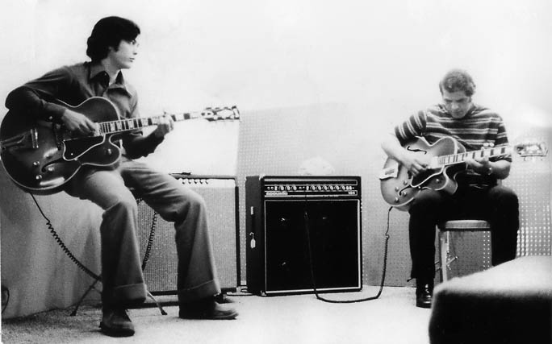

Elegance, Style and Infectious Enthusiasm
Eddie Pasternak is a delightful presence with an abundance of warmth, wit, and charm. He consistently presents himself with the greatest of elegance and class. It is his combination of musicianship, style and personality that sets Eddie apart from other fine local musicians and makes him the perfect musical choice for the sophisticated venues of the San Francisco Bay Area.
Twenty-Five Years of Experience
For a quarter century, Eddie has been a mainstay of the Bay Area music scene. Eddie’s guitar work has been a welcome feature in swing-oriented performances with former members of Count Basie and Duke Ellington’s bands as well as in Motown dance bands. He has frequently performed in the Bay Area’s finest hotels and major local events. Noted Bay Area music critic Lee Hiderbrand describes him as a “remarkable guitarist who plays basslines and chords simultaneously. He generates intense swing.“
Eddie Studied with Warren Nunes from 1968 to 1975. Then, continued studying with pianists –
Dick Hidman, Don Haas, Marcos Silva. Later, with guitarists – Joe Pass and John Stowell.